レポートの字の段 — 今と3案の比較
疑似セッションの4場面を撮った比較（幅 1400）。案の画は、実物の画面に字の大きさと太さだけを差し替える CSS を後から入れて撮った。コードは変えていない。余白や色は今のままにしてある。
今の字の段（実物で測った computed の値）
| 役 | 大きさ・太さ | 使っているトークン |
|---|---|---|
| 数の札の数（Stats） | 24px・700 | 2em（ほかの段から外れた値） |
| 結論の1文目（task のあるレポート） | 21px・700 | --report-heading-2 |
| 結論（task の無いレポート） | 17px・500 | --report-heading-3 |
| 節の見出し（h4） | 17px・700 | --report-heading-3 |
| 選択肢の名前（お願いの選択肢） | 17px・600 | お願いの --font-size-lg を継ぐ |
| 本文・表のセル・コードの塊 | 14px・400 | --font-body |
| 題（タスクの名前） | 14px・600 | --font-body |
| 「したこと」「確かめたこと」の中身 | 12px・400 | --font-secondary |
| ラベル・表の頭・札の名前・欄外注 | 12px・400〜650 | --font-label・--font-secondary |
目に付いたこと
- 結論が大きすぎる。1文目の 21px・700 は、画面全体でいちばん大きい字になっている。右の「依頼」の見出しの 20px よりも大きい。2行に折れると、紙の上端が見出しの塊で埋まる。
- 同じ役が場面によって違う字で出る。結論は task の有無で 21px・700 と 17px・500 に分かれる。「したこと」の中身は 12px で、本文の 14px より小さい。いちばん読ませたい要約が、注の大きさで出ている。
- 上下の順が逆になっている。題（タスクの名前）は 14px で、すぐ下の結論は 21px。紙の題がいちばん弱く見える。数の札の 24px も結論より大きい。
- 段の間が開きすぎている。17px の上は 21px と 24px に飛ぶ。14px と 17px の間には段が無いので、節の見出しを本文から少しだけ立てる、という使い方ができない。
- 太さが5種類ある。400・500・600・650・700 が混ざっていて、500 と 650 は隣の太さとほとんど見分けられない。
- お願いの選択肢の名前（17px）が節の見出しと同じ大きさ。紙の終わりで、見出しがもう1つ始まったように見える。
案
A 結論だけ縮める
結論の1文目を 21px → 17px にする。ほかは今のまま。
変更は1か所で済む。ただし、結論と節の見出しが同じ 17px・700 になり、2〜6の課題は残る。
B 5段にそろえるおすすめ
字の段を 12・14・15・17・20 の5段、太さを 400・600・700 の3つに絞る。結論は task の有無にかかわらず 17px・700。節の見出しは 15px・700、数の札は 20px。お願いの選択肢の名前は 14px・600、「したこと」と「確かめたこと」の中身は 14px。
大きい字は結論の1か所だけになる。そのあとの段は、節の見出し → 本文 → 注 の順に1段ずつ下がる。
C 題を立てる
B の段の上で、題（タスクの名前）を 17px・700 にする。結論は 15px・600 に下げて本文寄りにする。
紙の題が一番上に立つので、書類らしい形になる。その代わり結論が節の見出しと同じ 15px になり、「結論で大きく言う」という今の方針（ADR 0064 ほか）から外れる。
| 役 | 今 | A | B | C |
|---|---|---|---|---|
| 題（タスクの名前） | 14・600 | 14・600 | 14・600 | 17・700 |
| 結論（task あり） | 21・700 | 17・700 | 17・700 | 15・600 |
| 結論（task なし） | 17・500 | 17・500 | 17・700 | 15・600 |
| 節の見出し | 17・700 | 17・700 | 15・700 | 15・700 |
| 数の札の数 | 24・700 | 24・700 | 20・700 | 20・700 |
| 選択肢の名前 | 17・600 | 17・600 | 14・600 | 14・600 |
| したこと・確かめたことの中身 | 12・400 | 12・400 | 14・400 | 14・400 |
| 本文・ラベル | 14・12 | そのまま | ||
| 太さの種類 | 5 | 5 | 3 | 3 |
コードの塊は本文と同じ 14px。等幅の字は同じ大きさでも大きく見えるので、13px に下げる手もある。今回の画では変えていない（B を採るなら、一緒に決めておくとよい）。節と節の間のあき（約 80px）も大きいが、これは字ではなく余白の話なので、この比較の外に置いた。
task のあるレポート（場面 report-proof-work-record）
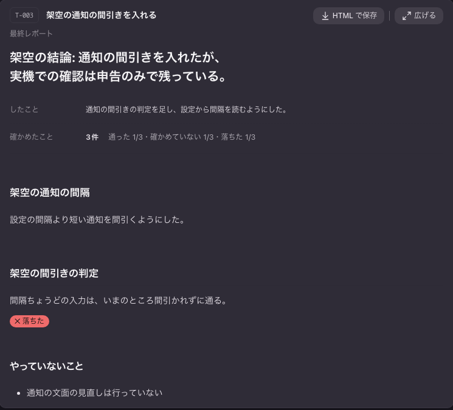
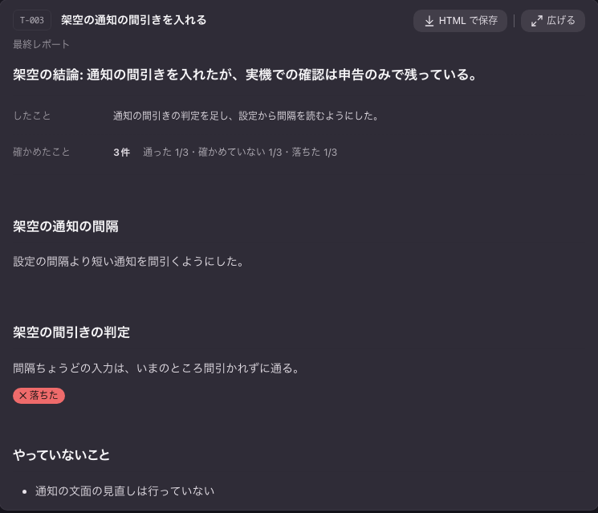
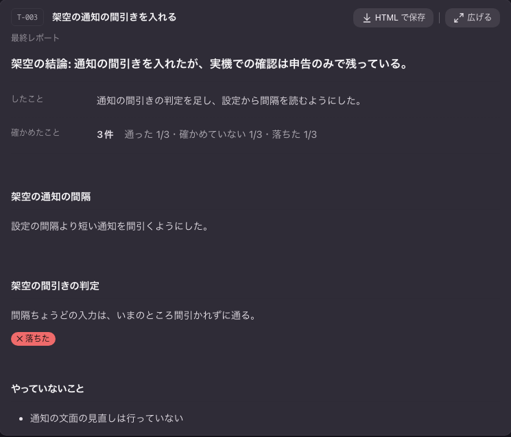
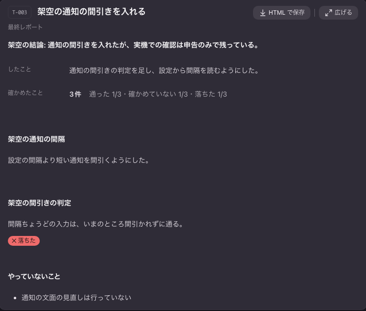
task の無いレポートと数の札（場面 report-board）

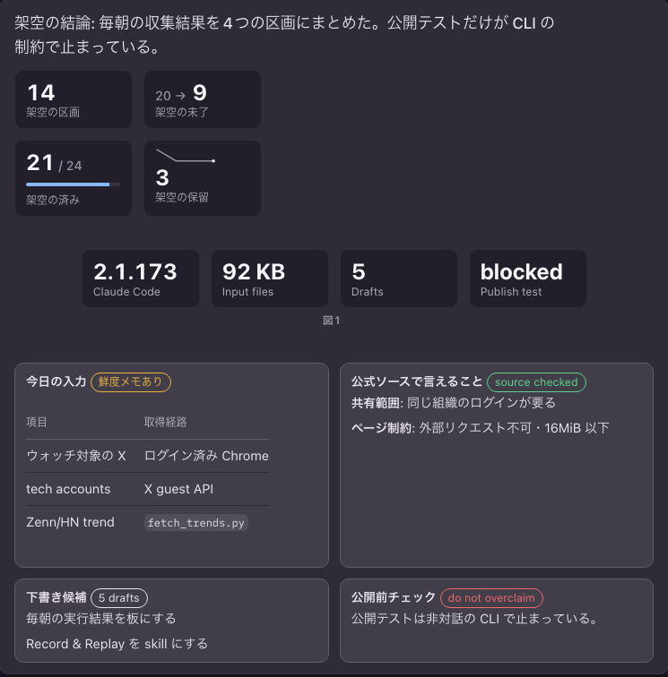
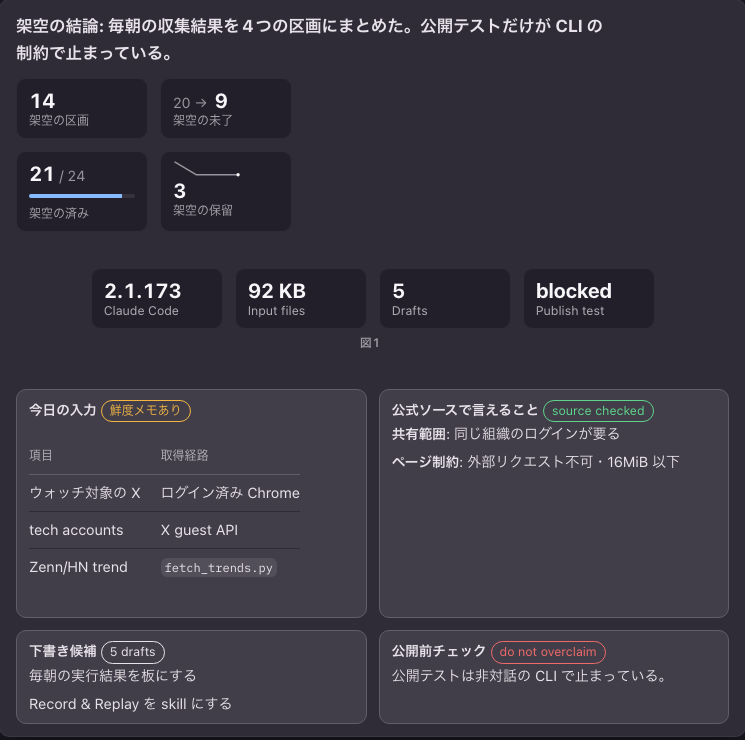
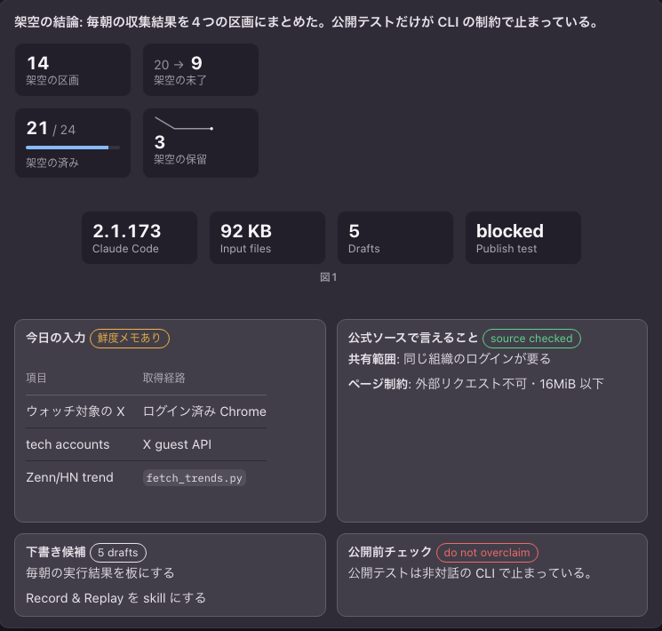
お願いと選択肢（場面 report-favor-options-two）

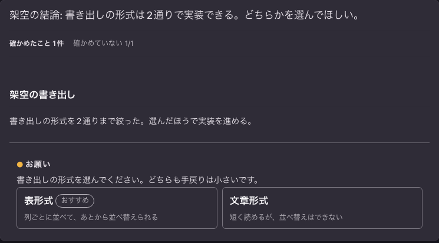
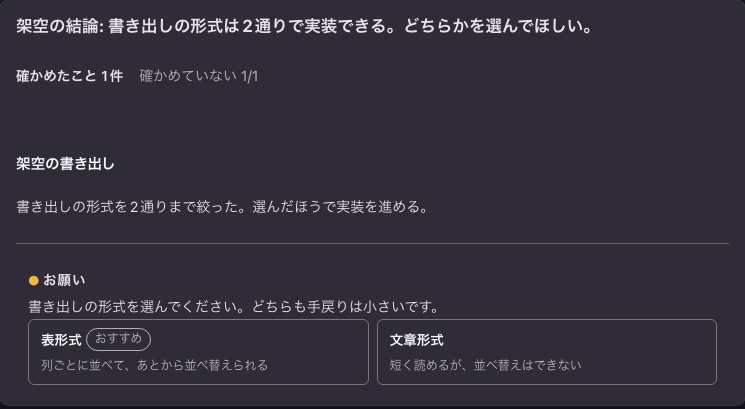
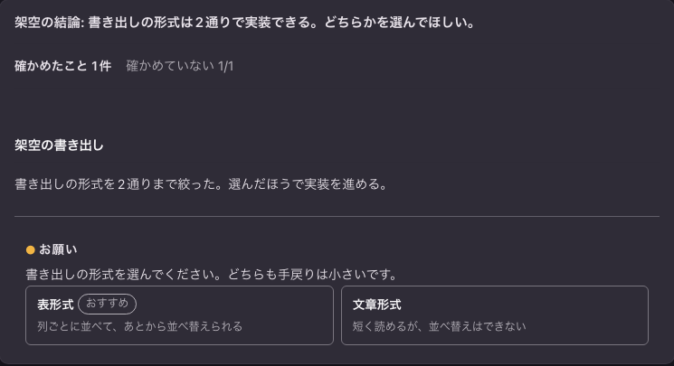
部品が多いレポート（場面 report-blocks）
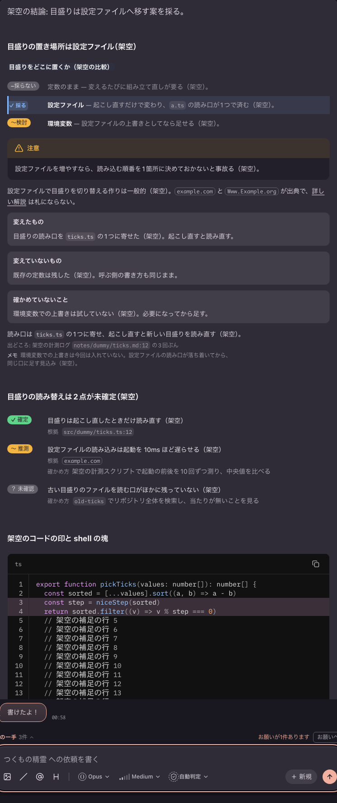

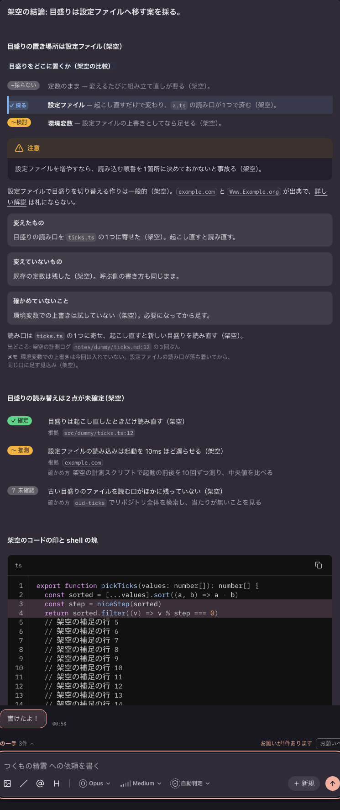
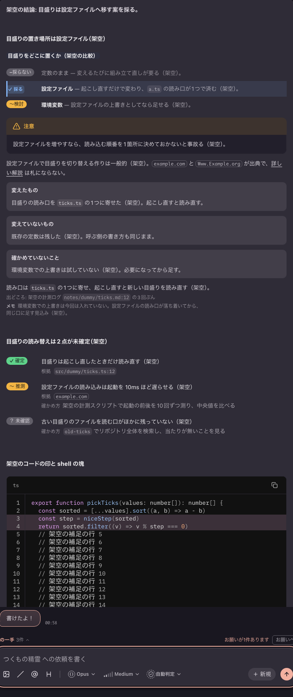